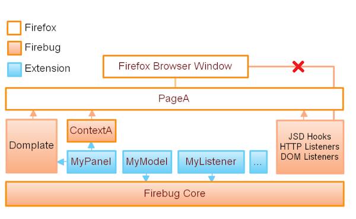

eval() debuggingeval()?chrome urls, Firefox components, extensions
| Firebug User | ||||
| tab1 | tab2 | ↓ | tab3 | tab5 |
| tab1 | tab2 | tab3 | tab4 | tab5 |
| Window 1 | Window 2 | |||
| Firefox App | ||||
| jsd | consoleService | xpcom | ||
| Firebug | ||||
Lots of Firebug work and UI issues come from this difference
onScriptCreated(jsdIScript, frame) NeedssetTimeout and setInterval inspection